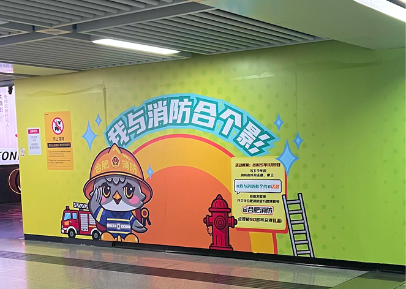
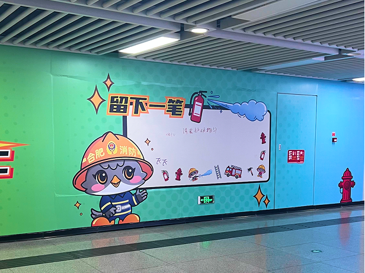
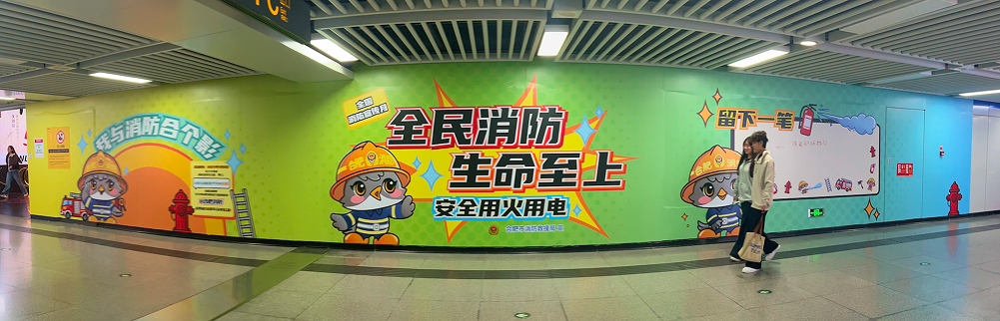

I lead the design for a public awareness campaign for Hefei's fire safety initiative! I created bold, urgent visuals designed to educate and engage a general audience across outdoor and print channels.
Overview
The Hefei Municipal Fire Department commissioned a wall mural in the city's subway to improve fire safety knowledge among residents.
The client called for bright visuals and 3 distinct sections on the mural: a photo-taking section, the main slogan of the poster, and an interactive section for passerby to leave a message for others to see. The mural had to be striking enough to stop someone on the street, clear enough to communicate quickly, and warm enough to feel approachable.
Process
Initial Visual Direction
I reviewed the existing public safety communication in Hefei. To appeal to a broader audience, the Fire Department wanted to incorporate a cartoon mascot. I generated 3 different visuals and recieved general feedback that the colors weren't bright enough to entice people.
Initial drafts
After the initial feedback, I developed a system using the mascot's bold flat illustration with a bright palette of green, blue, and yellow.
Final Mural Design
After going through multiple rounds of feedback, I further increased the saturation of the colours. I also altered the font to be a more dynamic and expressive 黑体 (sans-serif). Though it is a typeface with unique details, it maintains its legibility when it's printed out.
Final Product
Located in one of the busiest subway stations in the city, the final mural became a mini attraction for the locals to see and leave messages on.



Reflection
I learned a lot about the process of creating visuals for campaigns. I had to learn to balance the needs of the client as well as the limitations of the wall space given to me.